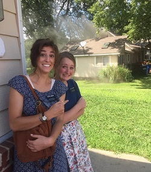
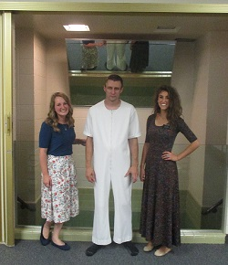
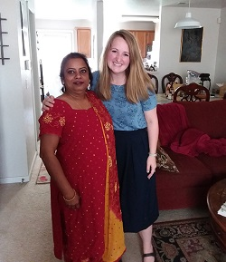
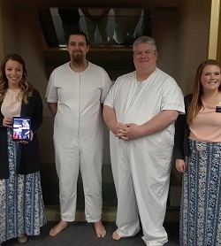
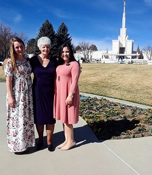
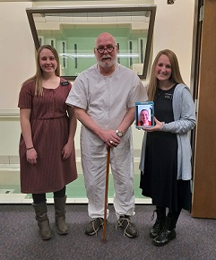

Sister Katelyn Simonsen ♥ Kansas Wichita Mission
Mission Stories
Kansas City Temple Trip with Daniel
The work has been wonderful! This week I had the special opportunity to go to the temple with a recent convert, Daniel. How amazing is that? I am so lucky I could go. My companion, Sister Jensen was able to teach and baptize him. Daniel has more faith than just about anyone I know! Its incredible!"

The Lord Puts You Where He Needs You
We were contacting people in the neighborhood and decided to change the direction we were going. We didn't think much of it. We were walking towards an investigators house who was difficult to get a hold of but I thought that we should try to see if he was home. As we got closer to his house we saw smoke coming out of his windows. We walked up to the door and I looked in and saw flames all over inside his house! I couldn't believe my eyes! We quickly called the police, found our investigator, and got away from the house. The police and firemen showed up and got everything under control. No one was hurt! I am truly grateful the Lord changed our plans and directed us where were needed most.

BIG Things Happening
Big announcement...Matt was baptized!!! It was an amazing day! The joy this gospel brings is incredible. It was so cool to be apart of his conversion and his decision to be baptized. He is a great guy.

Rajani is Getting Baptized
The first thing Rajani said when she walked out of the font was, "I feel so peaceful!" It made my heart melt. She has such a strong testimony. We have become close friends, it's amazing how much love you can have for someone when that love begins with the Savior Jesus Christ.

Baptism by Skype?
Nick, my very dear friend, is preparing for baptism on the 20th! I am so excited for him! Sadly though, I'm going to miss his baptism...I'm being transfered to Lamar, Coloardo. Thank goodness for the miracle of technology, however, that allowed me to attend his baptism despite the distance! Nick's baptism made my whole mission basically! There isn't anything more wonderful than seeing someone following the example of our Savior and Redeemer!

I've Got the Ghost!
Everything turned out great for Shirley's baptism! Shirley was an investigator who Sister Hoeppner taught for just a couple weeks before I came to Lamar. She was very closed off and not open to join at first, but over time her heart has been softened by the spirit. Shirley accepted the invitation to be baptized and was confirmed a member of the church. It was a sweet experience. We went to visit her that night and she proclaimed, "I've got the ghost!" Shirley is so happy and so grateful for the gospel. It has brought a lot of happiness to her life, and it's easy to see it.

My Dear Friend Robert
My dear friend Robert was baptized today! I am so grateful for him and the example he is to me! He follows the Savior in word and deed. I am so grateful for the opportunity I had to be apart of this happy day!